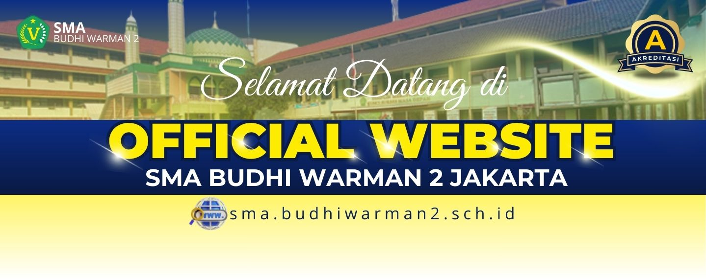
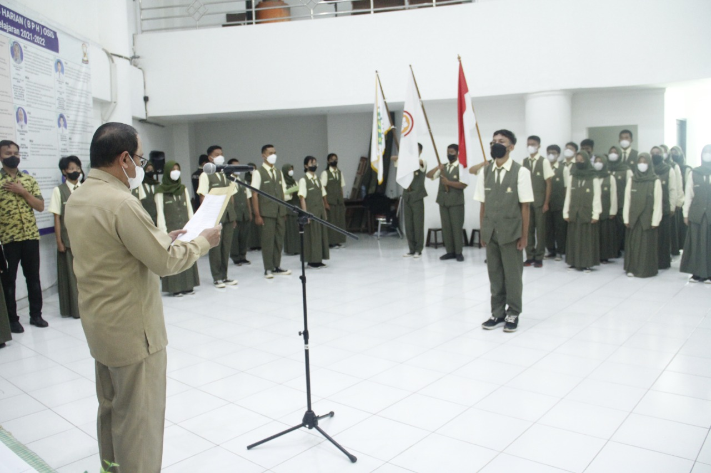
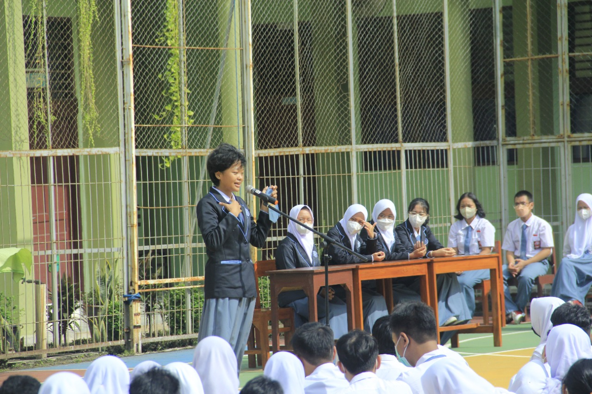
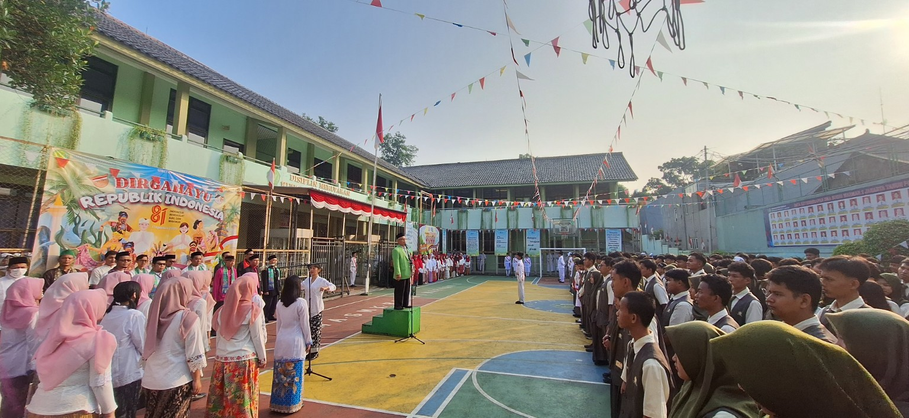

Tentang SPECTA
SPECTA merupakan nama organisasi siswa di SMA Budhi Warman II Jakarta. Bagi siswa, SPECTA bukan hanya tempat berkumpulnya pengurus OSIS, tetapi juga ruang untuk belajar mengatur kegiatan sekolah dari belakang layar. Mulai dari menyusun rencana, membagi tugas, menghubungi pihak yang diperlukan, sampai memastikan acara berjalan dengan tertib.
Kegiatan SPECTA melatih siswa untuk berani mengambil tanggung jawab dan tidak hanya menjadi penonton dalam acara sekolah. Pengurus juga menjadi penghubung antara siswa, guru, dan panitia ketika ada kegiatan yang melibatkan banyak orang. Karena itu, kerja sama dan komunikasi menjadi bagian penting dalam setiap programnya.

Kegiatan SPECTA
Program SPECTA tidak hanya berisi acara seremonial. Setiap kegiatan dibuat agar siswa mendapat pengalaman mengatur acara, bekerja dalam tim, dan ikut membangun suasana sekolah yang lebih aktif.
- MPLS, yaitu membantu siswa baru mengenal lingkungan, aturan, dan budaya sekolah.
- LDKPD, kegiatan latihan dasar untuk membentuk sikap disiplin dan kepemimpinan.
- Bakti sosial, sebagai bentuk kepedulian siswa kepada masyarakat di sekitar sekolah.
- Demo ekstrakurikuler, agar siswa dapat melihat dan memilih kegiatan sesuai minatnya.
Dokumentasi Kegiatan
Beberapa foto kegiatan siswa yang menjadi bagian dari dokumentasi sekolah:



Cara Bergabung dengan SPECTA
Siswa yang ingin ikut dapat mengikuti informasi pendaftaran yang dibagikan oleh panitia. Tidak harus langsung berpengalaman menjadi panitia, karena prosesnya juga menjadi kesempatan untuk belajar.
- Menunggu informasi pendaftaran dari panitia melalui media sosial atau pengumuman sekolah.
- Mengisi formulir pendaftaran dengan data dan alasan ingin bergabung.
- Mengikuti proses seleksi atau wawancara untuk mengenal minat calon anggota.
- Memilih divisi sesuai minat dan kemampuan, lalu mengikuti arahan pengurus.
Kontak SPECTA
- Lokasi
- Ruang SPECTA, Jl. Raya Bogor KM. 28, Pekayon, Pasar Rebo, Jakarta Timur
- @official_specta
- Email sekolah
- admin@budhiwarman2.sch.id
- Website sekolah
- sma.budhiwarman2.sch.id, tempat informasi resmi sekolah dibagikan.